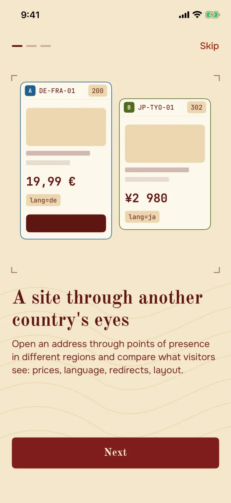
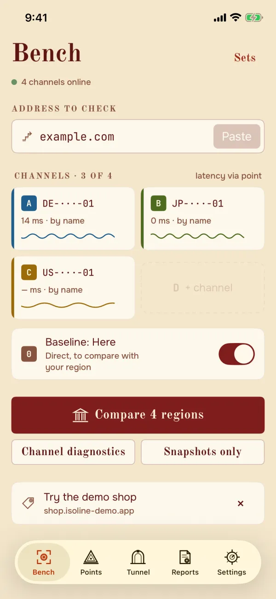
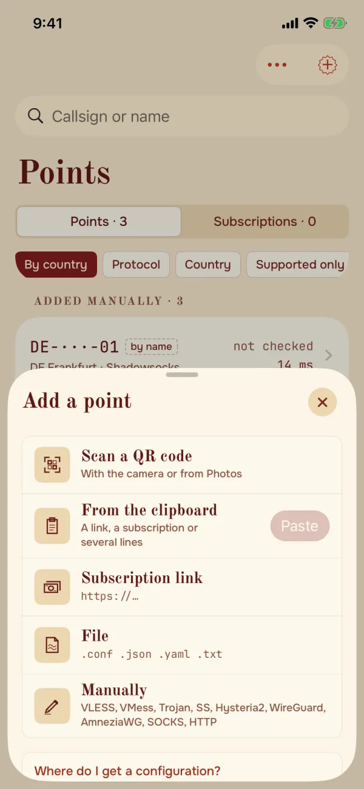
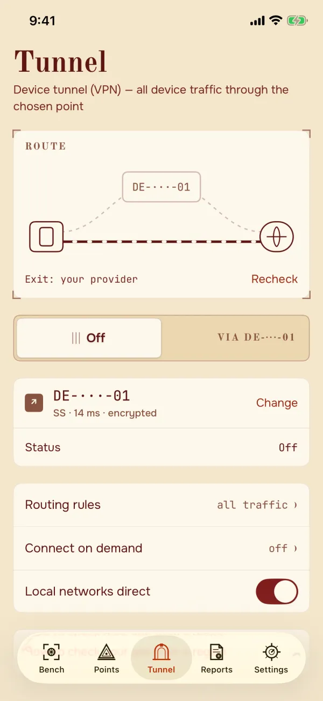
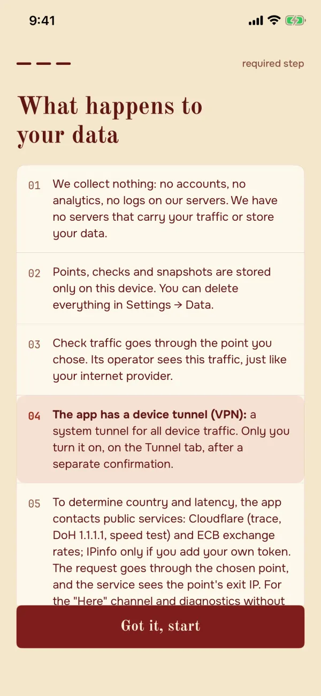
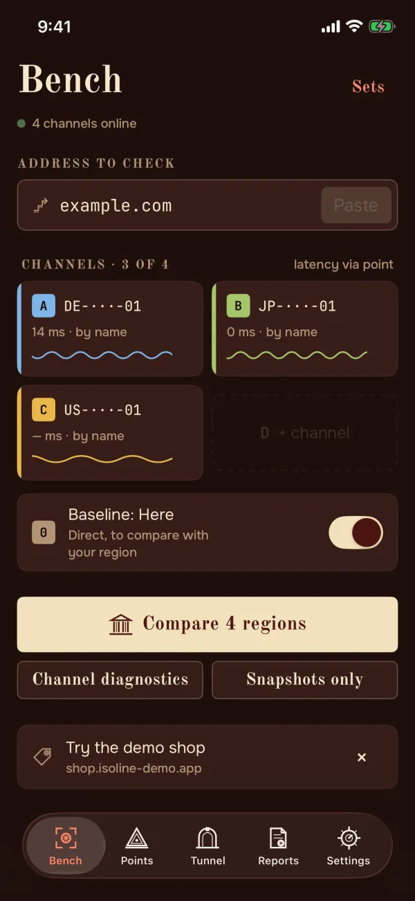
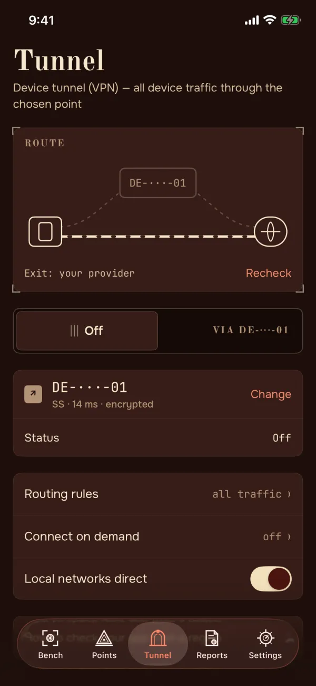

Geo-QA · iPhone · Mac · Android
Stranica očima druge zemlje
Isoline otvara jednu adresu istodobno kroz dvije do četiri vaše vlastite točke prisutnosti i pokazuje što posjetitelji u svakoj regiji doista dobivaju: cijene, jezik, preusmjeravanja, zaglavlja, certifikate. Svaka provjera postaje izvještaj sa žigom koji možete predati razvojnom timu.
- UskoroApp Store
- UskoroMac App Store
- UskoroGoogle Play


01 · Usporedno
Jedna adresa, do četiri regije odjednom
Svaki kanal je zasebna, izolirana sesija preglednika koja ide kroz točku prisutnosti koju ste sami dodali. Pomicanje i navigacija su usklađeni, pa se razlika među regijama vidi, a ne nagađa.
Ilustracija s oglednim vrijednostima. Pozivni znakovi poput DE-FRA-01 nastaju iz izmjerenog izlaza: zemlja · čvor · broj.
02 · Nalazi
Razlike na popisu — ne samo snimke zaslona
Kad se kanali učitaju, Isoline ih uspoređuje i navodi što se razlikuje. Cijene se izvlače iz strukturiranih podataka i preračunavaju po dnevnom referentnom tečaju ESB-a, pa razlika od 9 % postaje broj.
- Cijene i valutaCijene iz JSON-LD-a, Open Grapha i mikropodataka s Δ % u odnosu na osnovnu liniju.
- Jezik i lokalizacija
lang, obradaAccept-Language, oponašanje lokalizacije po kanalu. - Lanac preusmjeravanjaSvaki korak, geo-kolačići i gdje svaka regija završi.
- Zaglavlja i CDNRazlike zaglavlja po regijama,
Vary, predmemorija i rubni čvor. - CertifikatiVerzija TLS-a i podaci o certifikatu po kanalu.
- DijagnostikaKako vas stranica vidi: izlazni IP iz više izvora, zemlja DNS poslužitelja, vremenska zona, IPv6, latencija i brzina.
03 · Dokazi
Izvještaji sa žigom i kontrolnim zbrojem
Snimke nose žig utisnut u sliku: točku, izlazni IP, mrežu, vrijeme i korisničkog agenta, te SHA-256 kontrolni zbroj datoteke. Cijelu provjeru izvezite kao PDF izvještaj, ZIP sa snimkama ili JSON za sustav praćenja grešaka. IP adrese se mogu maskirati; pristupni ključevi nikada se ne izvoze.
Ponovite provjeru kasnije i Isoline će pokazati što se promijenilo.
- Točka
- DE-FRA-01
- Izlazni IP
- 203.0.113.24
- Mreža
- AS64500
- Vrijeme
- 2026-11-23 09:41:07Z
- UA
- Isoline/1.0 (iOS 26.1)
- SHA-256
- 9f2c4e1a…7b03d8e5c61a40f2b9e0d7c4a3f185e6
04 · Tunel uređaja (VPN)
VPN tunel za cijeli uređaj — nazvan svojim imenom
Isoline sadrži tunel uređaja (VPN) — u aplikaciji „Device tunnel (VPN)”. On usmjerava sav promet uređaja kroz jednu točku prisutnosti koju ste vi postavili: za testiranje drugih aplikacija iz neke regije ili jednostavno za korištenje konfiguracije koju već imate.
- Isključen je prema zadanim postavkama. Uključujete ga na kartici Tunnel, nakon zaslona s objašnjenjem i sistemskog dopuštenja za VPN.
- Promet ide samo na poslužitelj koji ste odabrali. Mi nemamo poslužitelje i nikada ga ne vidimo.
- Pravila usmjeravanja, povezivanje na zahtjev (iPhone, Mac) i usmjeravanje po aplikacijama (Android).
05 · Vlastite konfiguracije
Vaše točke prisutnosti, vaše konfiguracije
Isoline ne prodaje poslužitelje ni pretplate. Točke dolaze s vašeg poslužitelja, od administratora vaše tvrtke ili od pružatelja kojeg već koristite. Dodajte više pretplata i poveznica odjednom; svaki uvoz najprije prikazuje pregled.
- VLESSuklj. Reality, Vision
- VMess
- Trojan
- Shadowsocksuklj. Shadowsocks 2022
- Hysteria2
- kompatibilno s WireGuardom
.confi poveznice - AmneziaWG
- SOCKS5
- HTTP(S) proxy
- QR kodKamerom ili iz slike u Fotografijama
- Poveznica ili međuspremnikJedna poveznica, pretplata ili više redaka odjednom
- PretplataViše pretplata, osvježavanje po vašem rasporedu
- Datoteka
.conf.json.yaml.txt - RučnoSva polja, za svaki protokol
06 · Što Isoline ne radi
Alat, a ne usluga
- Ne prodajemo poslužiteljeNe pružamo VPN uslugu ni točke prisutnosti.
- Nema računaNema registracije. Sve ostaje na vašem uređaju.
- Nema kupnji u aplikacijiNema pretplata, ništa se ne otključava.
- Nema oglasa ni analitikeNema alata za praćenje, izvještavanja o rušenju ni SDK-ova trećih strana koji prikupljaju podatke.
07 · Pregled
Unutar aplikacije
Stvarni zasloni aplikacije za iPhone (sučelje na engleskom, svijetla i tamna tema). Točke na ovim zaslonima su lokalne testne točke nazvane po regijama.





08 · Platforme
iPhone, Mac i Android
- iPhoneiOS 18 ili noviji
- MacApple silicon · macOS 15 ili noviji
- AndroidAndroid 9 ili noviji
Jezik aplikacije: sučelje aplikacije Isoline dostupno je na engleskom i ruskom jeziku. Hrvatski prijevod aplikacije trenutačno ne postoji; ova web-stranica i pravni dokumenti dostupni su na hrvatskom.
09 · Pitanja
Česta pitanja
Je li Isoline VPN usluga?
Nije. Isoline je alat za testiranje i klijent. Sadrži tunel uređaja (VPN), ali ne pružamo poslužitelje, račune ni pretplate. Povezujete se samo s točkama prisutnosti koje ste sami postavili.
Gdje mogu nabaviti konfiguraciju?
S vlastitog poslužitelja, od administratora vaše tvrtke ili od pružatelja s kojim već imate ugovor. Isoline prihvaća poveznice za dijeljenje, pretplate, QR kodove i datoteke. Pogledajte Uvoz.
Koje podatke prikupljate?
Nikakve. Točke, provjere, izvještaji i postavke pohranjuju se samo na vašem uređaju. Zahtjevi idu na točke koje ste odabrali i na nekoliko javnih usluga za mjerenje izlaza (npr. Cloudflare). Pojedinosti su u Politici privatnosti.
Je li aplikacija na hrvatskom?
Sučelje aplikacije trenutačno je na engleskom i ruskom. Upute na ovoj stranici navode nazive izbornika onako kako se prikazuju u engleskom sučelju (npr. Settings › Data).
Naplaćuje li se nešto?
Isoline nema kupnji u aplikaciji ni pretplata. Eventualni troškovi točaka prisutnosti stvar su vas i vašeg pružatelja.
Je li uporaba zakonita?
Isoline je mrežni alat opće namjene i alat za testiranje. Vi ste odgovorni da njega i konfiguracije koje dodajete koristite u skladu sa zakonima svoje zemlje i uvjetima usluga koje testirate. Pogledajte Uvjete korištenja.
Kada ga mogu preuzeti?
Isoline se priprema za App Store i Google Play. Poveznice na trgovine pojavit će se na ovoj stranici kad aplikacije budu objavljene.